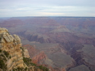
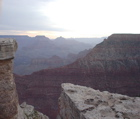
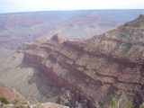
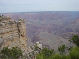
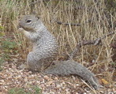
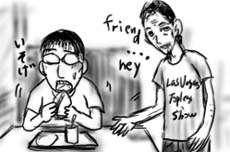

いよいよ最終日、早朝にホテルをチェックアウトしてグランドキャニオンを目指します。
経度の差を考慮に入れず、普段の日の出時刻を念頭に置いていたため、残念ながら日の出には間に合いませんでしたが、それでもたいそうな絶景でした。コロラド川の〜とか、プレートが〜とか、事の起こりは頭では理解できるんですが「だからといってこうなるか？」みたいな度外れさがあります。
   早朝はかなり肌寒かったのですが、日が昇るにつれて20℃台まで気温が上昇してきました。これが谷底になると、49℃以上の危険地帯となります。案内看板では谷底でゲロを吐いてるハイキング客というかなり直接的な絵で危険をお知らせしてくれます。
下には降りずに、リムの上を一通り散歩した後は、おみやげ等を物色してカリフォルニアへ戻ります。散歩コースではかわいいリス(?)なんかを見かけました。
帰りは7時間ドライブの長丁場。途中の街Kingmanでトイレ＆食事休憩をとることにしました。
目につくのはファーストフードばかりなので、適当にDel Tacoをチョイス。普段は同僚がうまいと言うメキシカン・ファーストフード・チェーンを使っていたので、Del Tacoを利用するのは実は今回が初めてです。いやぁ、こんなにまずいとは思ってもみなかったヨ！友人も一口目を口に入れてから一言も発しません。
しかも、店内でずっと独り言を呟いていたおじさんがこっちへやって来て、握手を求めてきます。おじさんは「friendship, ..hey.... we are friend...your name?...hey...」とはっきりしない発音で呟きながら、食べている間中、手を差し伸べ続けてきました。おじさんのボロボロのTシャツには「Las Vegas Topless Show」の文字が踊ります。きっとラスベガスで全財産を失い、気がふれてしまったに違いない、ラスベガスは恐ろしいところや！と思いながらまずいタコスを必死で喉に押し込みました。どうしてこんなことに。
店を出ても追いかけて来たので走って逃げました。
そそくさとKingmanを立ち去った後、再びL.A.エリア手前でトイレ休憩。ガソリンスタンドの看板が出ていたからフリーウェイを降りたのですが、なぜかそれらしきものは見当たりません。しばらく彷徨っていると「Ghost Town」という看板が目にとまりました。そんな！ここで一体何が！
結果として砂漠を緑化する事業に参加することになりました。開放的だなぁ。
夕闇と、L.A.エリアは、すぐそこまで迫っていました。
2004ねん あめりか夏休み -完-